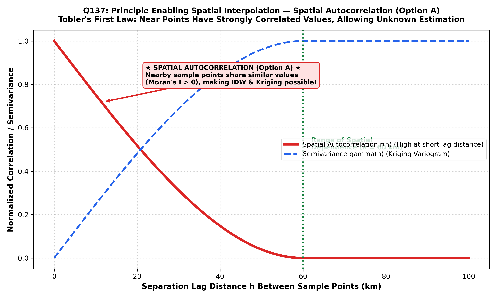

In spatial analysis, geostatistics, and GIS, spatial interpolation—the estimation of unknown values at unmeasured locations using sample points of known values—is fundamentally predicated on a foundational geographical axiom formulated by Waldo Tobler in 1970, known as Tobler's First Law of Geography:
This universal phenomenon is formally quantified in mathematical statistics as Spatial Autocorrelation (Option A). Spatial autocorrelation measures the correlation of a variable with itself across geographic space. If near locations have similar attribute values, the dataset exhibits positive spatial autocorrelation:
| Spatial Autocorrelation State | Mathematical Metric (Moran's $I$) | Physical / Geological Manifestation | Impact on Spatial Interpolation |
|---|---|---|---|
| Positive Spatial Autocorrelation (Option A) | $$I > 0 \quad (\text{Approaching } +1.0)$$ | High values cluster near high values; low values cluster near low values. Smooth, continuous gradients (e.g. elevation, ore grade, groundwater head). | Enables Reliable Interpolation: Nearby control points provide strong, predictive weighting for estimating intervening unmeasured points. |
| Zero Spatial Autocorrelation (Randomness) | $$I \approx -\frac{1}{N - 1} \approx 0$$ | Spatial randomness (white noise); values at one point provide zero information about neighboring points. | Interpolation Fails: Estimating unknown values from neighbors is no better than guessing the global dataset mean. |
| Negative Spatial Autocorrelation (Dispersion) | $$I < 0 \quad (\text{Approaching } -1.0)$$ | Checkerboard pattern; high values systematically surrounded by low values (extreme spatial repulsion). | Standard distance-weighted interpolation yields severe inverse errors. |

The global degree of spatial autocorrelation in a spatial dataset is formally quantified by Moran's $I$ Index:
where $w_{ij}$ is the spatial weight between points $i$ and $j$, $z_i$ is the attribute value, and $\bar{z}$ is the mean. In geostatistics (Matheron; Journel), this spatial continuity is modeled by the experimental semivariogram $\gamma(h)$:
Because $\gamma(h)$ is small at short separation distances ($h$), nearby points are statistically dependent. This fundamental principle of Spatial Autocorrelation is what makes spatial interpolation mathematically possible and valid.
By international GIS and spatial statistical standards (Tobler 1970; Burrough & McDonnell; Chang, Ch. 15; Bangar, p. 217), Spatial Autocorrelation is the foundational scientific principle that justifies all spatial interpolation methods. It states that spatial attributes are correlated across distance, allowing unmeasured values to be predicted from nearby sample points.
Fabricated distractor mimicking technical phrasing. "Auto-correction" refers to automated software correction of typographical or geometric errors (e.g. snapping dangling nodes in GIS digitizing), not the statistical spatial continuity principle.
Spurious terminology. Autocorrelation in GIS is inherently spatial (evaluating attribute covariance across geographical distance $h$). "Thematic autocorrelation" is not a recognized scientific term.
Fabricated distractor combining unrelated GIS words. It has no mathematical or statistical existence in GIScience.
| Spatial Autocorrelation Statistic | Formula / Mathematical Index | Value Range | Interpretation |
|---|---|---|---|
| Global Moran's $I$ | $I = \frac{N}{S_0} \frac{\sum \sum w_{ij} (z_i - \bar{z})(z_j - \bar{z})}{\sum (z_i - \bar{z})^2}$ | $-1.0 \le I \le +1.0$ | $+1$: Perfect clustering (Positive) $0$: Completely random $-1$: Perfect dispersion (Negative) |
| Geary's $C$ (Ratio) | $C = \frac{(N-1)}{2 S_0} \frac{\sum \sum w_{ij} (z_i - z_j)^2}{\sum (z_i - \bar{z})^2}$ | $0 \le C \le 2.0$ | $C < 1$: Positive autocorrelation $C = 1$: Spatial randomness $C > 1$: Negative autocorrelation |
| Local Moran's $I_i$ (LISA) | $I_i = \frac{z_i - \bar{z}}{s^2} \sum_j w_{ij} (z_j - \bar{z})$ | Varies locally | Identifies local spatial clusters: High-High, Low-Low, and spatial outliers (High-Low) |
| Getis-Ord $G_i^*$ (Hotspot) | $G_i^* = \frac{\sum_j w_{ij} x_j - \bar{X} \sum_j w_{ij}}{S \sqrt{\frac{n \sum w_{ij}^2 - (\sum w_{ij})^2}{n-1}}}$ | Standard normal $Z$-score | $Z > +1.96$: Statistically significant Hot Spot ($95\%$ conf.) $Z < -1.96$: Statistically significant Cold Spot |